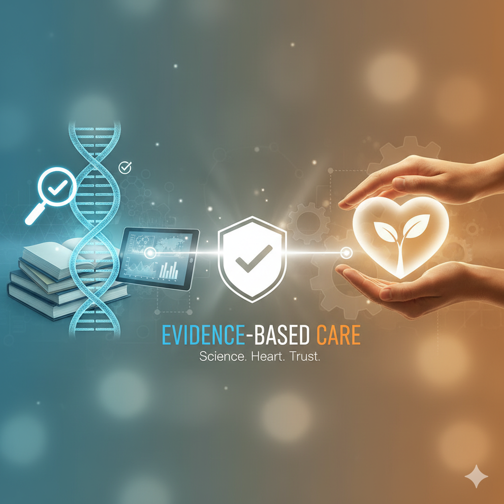

Transforming maternal care through compassionate evidence.
I bridge the gap between complex health data and the human stories of mothers and infants. My mission is to ensure every piece of research translates into a tangible, dignified impact on family well-being.
My Story
My work in maternal and infant health began at the most intimate level — walking alongside families through pregnancy, birth, and early parenting. Those early years showed me how profoundly a family’s experience is shaped not only by the people who care for them, but by the systems surrounding that care. I saw how policies, workflows, training, and organizational culture could either uplift families or create unnecessary barriers during some of the most vulnerable moments of their lives. I also saw what becomes possible when community programs center compassion, evidence‑based practice, and the wellbeing of the whole family.
That belief — that systems should strengthen families, not strain them — is what shifted my path. I moved into program leadership, where I spent years designing and scaling maternal‑health initiatives, building community doula programs, navigating Medicaid processes, and coaching teams to deliver trauma‑informed, dignity‑centered care. I learned how to translate evidence into practice and how to build programs that are both heart‑forward and operationally strong.
Evidence to Impact Consulting was born from that journey.
Today, I partner with organizations and families to create maternal‑health systems that honor dignity, strengthen communities, and make a measurable impact. My work is grounded in the belief that when programs are built with intention and humanity, everyone thrives. My commitment to this field is also deeply personal. I’ve spent my entire career supporting families through transformative, often tender moments — from my early days as a Client Advocate in a pregnancy care center to my work as a Newborn Care Specialist providing overnight support to new parents. I’ve sat with families navigating complex emotions, celebrated their breakthroughs, and witnessed the beautiful chaos of welcoming a new baby. Those experiences taught me that compassionate, evidence‑based care doesn’t just change outcomes — it changes lives. Today, I bring together my background in sociology, trauma‑informed care, and program development to create spaces where parents feel confident, nurtured, and never alone. Whether I’m strengthening community programs, designing care frameworks, or supporting a newborn overnight, my mission remains the same: to help families rest, heal, and thrive — and to ensure the systems around them do the same.

My Philosophy
Dignity-First
Every individual is treated with inherent worth and respect, ensuring families and communities feel valued, honored, and safe.
Equity & Access
Barriers are actively removed and pathways expanded so all families — regardless of background or circumstance — can receive the support they deserve.
Community Impact
Programs are designed to uplift families, strengthen community wellbeing, and create lasting, generational change

Evidence-Based Care
Programs and services are grounded in research, data, and proven practices that lead to meaningful, measurable outcomes.
My Qualifications
I bring a unique blend of hands‑on birth work, executive‑level training, and specialized expertise in maternal and infant health. My background reflects both the depth of direct client support and the strategic leadership required to build strong, sustainable, and culturally responsive programs.
school Professional & Academic Background
Bachelor of Science in Sociology with a focus on family systems and community health
Rising Executive Certificate, University of San Diego — advanced leadership development for emerging nonprofit executives
Extensive experience designing, launching, and scaling maternal‑health and community doula programs
Expertise in Medicaid processes, reimbursement pathways, and operational readiness
Cross‑functional project management across healthcare, education, and community‑based organizations
medical_services Maternal‑Health & Birthworker Training
Honored to support over 150 families (and counting) with compassionate care throughout pregnancy, birth, and postpartum.
Trauma‑informed, culturally responsive, and advanced birth‑worker training
Mental health, substance use, and co‑occurring physical health conditions
Education on pregnancy and birth with comorbidities
Comprehensive Spinning Babies® training
TENS unit for labor education and application
Specialized training in stillbirth and bereavement support
NAPS Academy Night Doula
National Child Passenger Safety Technician (2021–2023)
Trust‑Based Relational Intervention (TBRI) Training
Breastfeeding Coach & DONA Certified Birth Doula (2022)
Adult Mental Health First Aid (2025) & First Aid/CPR/AED
Safe Sleep Ambassador & Family‑Centered Coaching
tactic Leadership & Workforce Development
Strategic Supervision
Staff supervision, coaching, and workforce development across nonprofit and healthcare settings.
Curriculum Design
Development and professional training, including parent education and community doula instruction.
Direct Support
Hands‑on experience supporting families through pregnancy, birth, postpartum, and early parenting.
Certified Leadership Programs
O’Grady Leadership Institute
ReWork America Alliance
Power Leader Series
SA Area Foundation Management
Ready to make a measurable difference?
Let's discuss how we can partner to bring dignity and data-driven results to your next project.